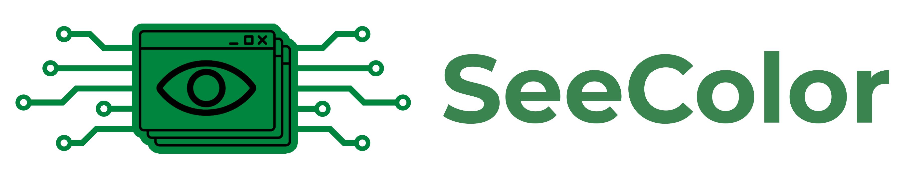
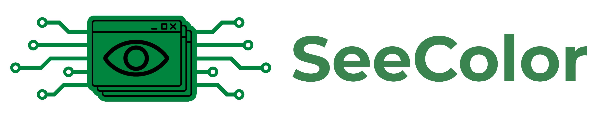

SeeColor Main Website

SeeColor Main Website
Right click an image on the page, click on the 'Evaluate' button to see the colorblindness results.
A lower value is best.
See the main site for more information.
*note, images must be public, private images may be uploaded to the main site